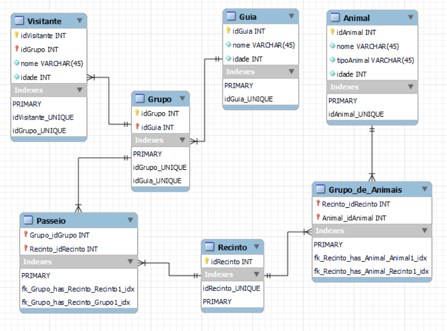
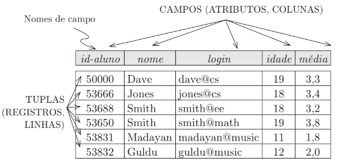

Para realizar funções dentro do banco de dados (inserção, remoção, edição ou qualquer outra atividade com dados) é necessário uma interação com o mesmo. Por conta disso, a linguagem SQL (Structure Query Language ou Linguagem de Consulta Estruturada) é a que intermedei essa interação, criando a ponte necessária entre o que precisa ser feito e o banco de dados. Assim, para que algo aconteça, é necessário que a lingaguem SQL esteja com a sintaxe correta e os valores desejados corretos.
Esta linguagem é aplicada para gernciar os bancos de dados do tipo MariaDB e MySQL, Microsoft SQLServer, PostgreSQL e Oracle. Perceba que o MongoDB, quinto item da lista anterior e marcado em expansão, não utiliza a linguagem SQL para criar as consultas e maipulações dos dados. Isso se dá pela forma com que ele organiza suas informações e também como disponibiliza as mesmas de volta ao sistema quando este solita uma consulta, por exemplo. Assim, ele desempenha em uma velociade incrível de resposta a consultas se comparado aos bancos de dados mais tradicionais que utilizam a SQL, Portanto o MongoDB é um banco de dados do tipo não relacional (NoSQL).
Segundo Elmasri e Navathe (2007), a linguagem SQL nasceu unicamente para ser a linguagem de consulta do sistema System R da IBM . A evolução desta empresa originou a linguagem SQL tão difundida atualmente.
O modelo relacional é muito simples: um banco de dados é uma coleção de uma ou mais relações, em que cada relação é uma tabela com linhas e colunas. Essa representação tabular simples permite que até usuários iniciantes entendam o conteúdo de um banco de dados e possibilita o uso de linguagens de alto nível simples para consultar os dados. As principais vantagens do modelo relacional em relação aos modelos de dados mais antigos são sua representação de dados simples e a facilidade com que mesmo consultas complexas podem ser expressas.
Uma relação consiste em um esquema de relação e em uma instância de relação. A instância de relação é uma tabela, e o esquema de relação descreve os cabeçalhos de coluna da taleça.
O esquema especifica o nome da relação, o nome de cada campo (coluna, atributo) e o domínio de cada campo
Uma instância de uma relação é um conjunto de tuplas, também chamadas de registros, no qual cada tupla tem o mesmo número de campos que o esquema de relação.
A linguagem SQL possui vários subconjuntos que permitem definir, consultar, manipular, controlar permissões e fazer transações no banco de dados. Eles são: